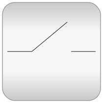
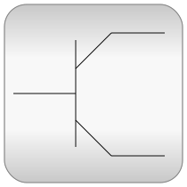

This package contains packages for analog electrical components:
| Name | Description |
|---|---|
| Examples that demonstrate the usage of the Analog electrical components | |
| Basic electrical components | |
|  Ideal | Ideal electrical elements such as switches, diode, transformer, operational amplifier |
| Connectors and partial models for Analog electrical components | |
| Lossy and lossless segmented transmission lines, and LC distributed line models | |
|  Semiconductors | Semiconductor devices such as diode, MOS and bipolar transistor |
| Potential, voltage, current, and power sensors | |
| Time-dependent and controlled voltage and current sources |